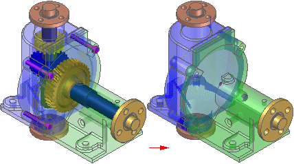

Simplifying assemblies
When you work with a large, complex assembly, it can be useful to work with a simplified version of the assembly. For example, a large assembly with many subassemblies can process slowly.
The commands in the Simplify group on the Tools tab in the Assembly environment allow you to create a simplified representation using either visible faces or a simplified assembly model using solid geometry.

A simplified assembly processes more quickly when used in a higher level assembly or a drawing. You can also control whether the as designed or simplified assembly representation is used in other documents and when opening an assembly. This allows you to work with larger data sets more efficiently.
You can also save the simplified representation of the assembly to a new document name. This can make it easier to share or protect proprietary information when exchanging data with other companies that need access to your data.
Simplified assemblies and memory usage
When you create a simplified representation of an assembly, the data storage requirements for the assembly document increase because the surface data for the simplified representation is stored in the assembly document.
The size increase required to support the simplified representation is small when compared to the size requirements of all the documents that make up the assembly.
When you place a simplified assembly document as a subassembly into another assembly, the memory requirements required to display the higher level assembly drop dramatically. This improves performance and also allows you to work with larger data sets more effectively.
This performance improvement also applies when creating a drawing of a simplified assembly. Because less memory is required to support the simplified data set, the drawing views will process quicker.
Simplifying an assembly
You access the commands for simplifying an assembly using the Simplify Assembly command on the Tools tab in the Model group. The Simplify commands allow you to create and update the simplified representation and save the simplified representation as a separate document. After you have simplified the assembly, you can return to the Assembly environment using the Design Assembly command on the Tools tab in the Model group.
When you create a simplified representation of an assembly, an entry is added to PathFinder to indicate that a simplified representation of the assembly exists.
Creating the simplified representation
The Visible Faces command allows you to process the assembly to show only the exterior envelope of faces and to exclude parts, such as small parts, which reduces the total number surfaces that make up the assembly. The simplified assembly representation is associative to the components in the assembly.
The Model command allows you to enclose the components that are to be simplified in a solid body using ordered feature modeling techniques.
Creating an enclosure
The Enclosure command allows you to envelope the selected parts with either a rectangular or cylindrical solid to quickly create a simplified solid. More ordered features, such as cutout and rounds, can be used to refine the shape of the solid used to simplify the assembly.
Auto-Simplify
The Auto-Simplify command allows you to create a single design body from all selected components. You can remove internal features. Voids are automatically removed.
Duplicating the simplified model
The Duplicate Body command allows you replicate occurrences of simplified geometry much like an assembly pattern.
Updating simplified assemblies
When you make design changes to assembly components, you must use the Update Simplified Assembly command to update the simplified representation before the design changes are displayed in a higher level assembly or drawing that uses the simplified representation.
Saving the simplified representation as a document
You can use the File menu→Save As→Save Selected Model command on the to save the simplified representation of the assembly as a new Solid Edge Part document (*.par) or as a Parasolid document.
This can be useful when another company uses your assembly as a part in their assemblies. This reduces the data-management and transfer requirements to a single document, and it can also protect any proprietary information that a complete assembly might reveal.
Using simplified assemblies
You can specify whether the as designed version or the simplified representation of the assembly is used in many down-stream operations. In some cases, other Solid Edge functionality requires that the as designed version is used. For example, you cannot create a simplified assembly representation of an alternate assembly.
If you have already created a simplified assembly representation, then try to convert the assembly to an alternate assembly, a message is displayed to warn you that the simplified representation will be deleted.
When you use simplified assemblies in the Teamcenter-managed environment, use the Teamcenter preference SEEC_ExpandStructure to determine how product structures are expanded. Set the preference to 1 to expand product structures level-by-level. A simplified subassembly acts as a firewall and structure expansion stops at a subassembly that is simplified.
For more information on working with simplified assemblies in Solid Edge, see the Simplified assemblies best practices Help topic.
Placing simplified assemblies in other assemblies
When you place an assembly as a subassembly in another assembly, you can specify whether the assembly is placed using the as designed or simplified version. The Use Simplified Assemblies command on the Parts Library shortcut menu allows you to specify how the assembly is placed. When you place the simplified version of the assembly, only the faces that comprise the simplified representation of the assembly are available for positioning the assembly using assembly relationships.
You can use the commands on the PathFinder shortcut menu to specify whether the as designed or simplified version of a subassembly is used. You can control each subassembly in an assembly individually. This allows you to display the as designed version of a subassembly when needed, and then switch to the simplified version of the subassembly later to improve performance.
Inactivating Simplified Subassemblies
When working with large, nested assemblies that contain simplified subassemblies, you should work with the simplified subassemblies inactive whenever possible. This can significantly reduce memory requirements.
You can use the Inactivate and Activate commands on the PathFinder shortcut menu to inactivate and activate a simplified subassembly. When placing or editing relationships, you can use the Activate button on the Assemble command bar to activate a simplified subassembly.
Creating drawings of simplified assemblies
When creating or modifying drawing views of an assembly, options on the Drawing View Wizard and Drawing View Properties dialog box allow you to control how simplified assembly representations are applied.
You also can create a parts list from simplified assemblies by selecting the Use simplified assemblies option on the List Control tab (Parts List Properties dialog box).
Opening simplified assemblies
When opening an assembly, options on the Open File dialog box allow you to control how simplified assembly representations are applied.
When you want to work with large assemblies that contain simplified subassemblies, use the Auto-Select option to open the assembly. The Auto-Select option evaluates the size of the assembly and determines whether it is small, medium, or large based on the number of unique components defined on the Assembly Open As page of the Solid Edge Options dialog box.
In the Teamcenter-managed environment, if the assembly size is determined to be either small or medium, the entire design is downloaded to the cache and the product structure is expanded to all levels. However, if the assembly size is determined to be large, the product structure is expanded level-by-level until it reaches a simplified subassembly. Product expansion stops at that point.
Moving simplified assemblies
Because the simplified representation is considered a construction body, collision detection is not available using the simplified representation.
Checking interference on simplified assemblies
Because the simplified representation is considered a construction body, interference detection is not available using the simplified representation.
How do I
Edit an Auto-Simplify definitionCreate a single body using Auto-Simplify
Use the simplified version of a part in an assembly
Use the designed version of a part in an assembly
Create a simplified version of an assembly
Save a simplified assembly as a part
Controlling simplified assemblies
Learn more
Simplifying partsSimplified assemblies best practices
Look up more details
Auto-Simplify commandAuto-Simplify command bar
Create Simplified Assembly using the Visible Faces command
Create Simplified Assembly using the Model command
Enclosure command
Duplicate Body command
Simplify Assembly command
Save Simplified As command
Use Simplified Parts command
Use Simplified Assemblies command
Simplify Model command
Update Simplified Assembly command
Save Simplified Assembly As dialog box
Simplified Assembly Visible Faces Options dialog box
Design Assembly command
Use Designed Assembly command
Use Designed Part command
Design Model command
Create Simplified Assembly Visible Faces command bar
Create Simplified Assembly Model command bar